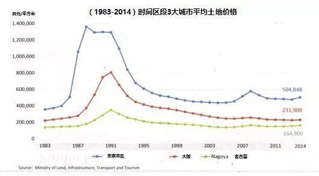
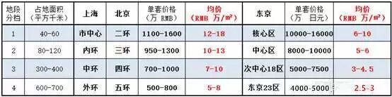
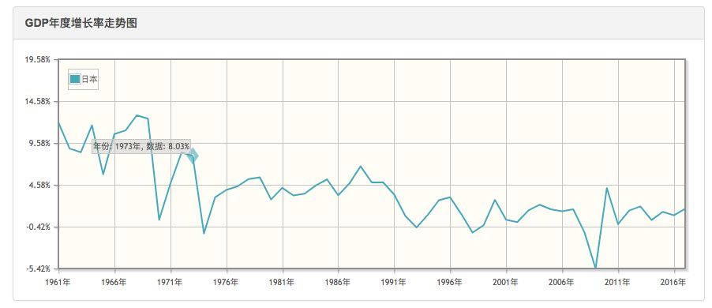

我之所以想要研究这个问题，是因为听了《香帅的北大金融学课》中徐远教授的“房地产特辑”。
他在特辑中的第一篇中就提出，中国的当前房地产价格没有泡沫。
由于他的推理过程很严谨，而且引用了很多数据，所以很具有说服力。以下为他的论证过程。
（以下内容总结自得到专栏《香帅的北大金融学课》徐远教授的“房地产特辑”）
现在中国的房价已经很贵了，尤其是北上广深等大城市，每平米的平均价格已经接近甚至突破十万。很多人会说现在中国的房价就像是日本1990年之前的情况，就处在泡沫破灭的前夜了。
那么到底中国大城市的房价相对于日本1990年的房价如何呢？
1990年的时候，东京住宅的房价大约是8万美金一平米，当时纽约的房价大约是1万美金一平米。东京的房价是纽约房价的八倍。
2017年的时候，北京的房价大约是1万美金一平米，同时期的纽约房价大约是2万美金一平米。北京的房价只有纽约房价的一半。
所以东京1990年泡沫最高的时候，房价是北京现在的16倍。
从上面这些数字看，至少相对于纽约这个参考值来说，北京目前的房价还远远达不到泡沫的程度。
不过当我看到东京房价在1990年的时候8万美金一平米的时候，我是颇为吃惊的。
要知道，东京的房价虽然跌得很惨，但是从最高的地方下跌下来，大约跌掉了65%（这个数字是我从下图估算出来的）。也就是说现在东京的房价大约还是有0.35 * 8 = 2.8万美金一平米。这还是要比北京的房价贵啊。

但是我不止一次看到有文章说，北京的房价已经要比东京都要贵了，这岂不是矛盾了吗？
怀着好奇心，我又去查了很多文章，终于发现了下面这张表，这下我大致可以把故事圆起来了。

观点1：1990年的8万美金/平方米，是最最核心地段的日本房产价格。1990年正常的东京市中心价格大约应该为2.85万美金/平方米。
首先，从上表中的数据来看。东京就算是核心区的房产，也没有2.8*7 = 19.6万人民币/平方米那么多。
这个19.6万人民币/平方米的价格，应该是对标的是东京最贵地段的房价，比如银座附近的房价。这个数字我是从知乎的帖子：
东京银座真实房价如何？（https://www.zhihu.com/question/274082912）
得到的印证。
在该帖子中，提到银座附近非常旧的房子大约12万人民币每平米，也就是1.7万美金一平米，也就是说如果是新房子的话，2.8万美金这个数字并不夸张。
反推回去的话，如果不考虑银座这种特殊地段，而是只考虑东京市中心的一般地段，我们可以把2.8万美金/平方米的价格修正为1万美金/平方米。
从2018年回到1990年，1万美金/平方米的房子，在泡沫最顶峰的时候，应该价格为1/0.35 = 2.85万美金/平方米。
观点2：纽约的房价，并没有2万美金，大约为1-1.5万美金/平方米
我从Zillow查到的纽约的房价数据，即便是time square或者是上东区附近，也只是大约在1万美金-1.5万美金左右。
综合了上面这些我查到的数据，根据徐远教授的逻辑推理，我们可以重新推一遍，基于的地段是所有这些城市的市中心地段的房价。
1990年的时候，东京住宅的房价大约是2.85万美金一平米，当时纽约的房价大约是1万美金一平米。东京的房价是纽约房价的2.85倍。
2017年的时候，北京的房价大约是15 / 7 = 2.14万美金一平米，同时期的纽约房价大约是1.5万美金一平米。北京的房价是纽约房价的1.42倍。
所以东京1990年泡沫最高的时候，房价是北京现在的2倍。
相差的8倍，大约4倍不到可以归咎于东京房价的估算不同，2倍不到可以归咎于北京房价的估算不同，1.5倍可以归咎于纽约房价的估算不同。
此外，北京要想达到日本同期的泡沫比率，最贵地段的房价还可以上涨至1.5 * 2.85 * 7 = 30万人民币一平米。目前大约15万的价格，并没有很多泡沫，当然也并不便宜。基本比日本房价泡沫挤完以后的价格稍高一点。
当然了，以上的这些重新推理，并不代表我的数据要比徐教授的数据更好，更准确。我只是想展示同样的推理过程，就算在采样的过程当中这边稍微偏一点，那边稍微偏一点，结果也可以非常不同。
至于真实的结论究竟是哪个，没有人说得清。不过在做完这些简单的分析以后，至少我有一点是确定的。
中国的房产价格目前来看没有泡沫，因为它的价格基本与国际上的一线城市差不多。
最后谈谈中国目前相对于日本的哪个阶段。
如果单纯从GDP增速来看，日本GDP低于7%的时期，基本上是1973年以后才开始的事情。

而中国则是从2017年左右才开始的事情。要是单单从这个角度来看，中国并不会因为GDP下降而导致房地产的崩溃。至少绝不会由于GDP增速下降而导致崩溃。
结束！